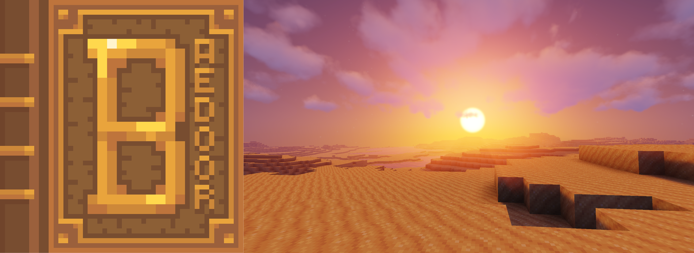

Concept art is currently the most important need for all projects. A lot of worldbuilding lacks heavily in visual representation of ideas, making it harder to push for any practical work without clear direction on how textual part of lore is represented.
|  |

|
|
Generally, Baedoor lore concepting is invaluable for all projects and the worldbuilding itself
to progress forwards. The universe itself has a lot of places that lack on visual representation
to complement textual ideas and make the area feel complete. |
Isle of Ansur is in most dire situation when it comes to imagery. |